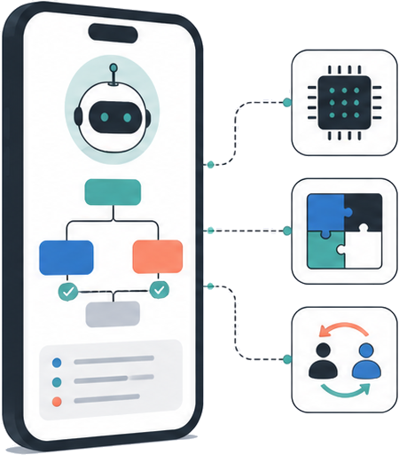
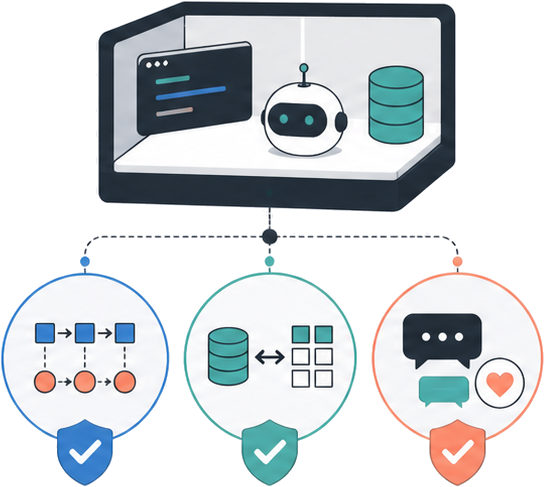
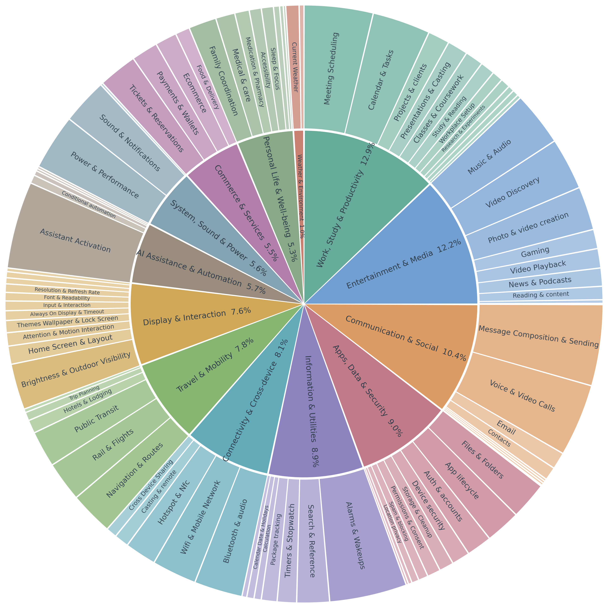

Benchmarking Mobile Planner Agents on Complex Real-World Tasks
Evaluate your model across Tool Use, Memory, Skills, and Sub-agent Collaboration without exposing hidden tasks or ground truth. Submit an HTTPS, OpenAI-compatible endpoint and receive a reviewed report within three business days.
Mobile AI agents are evolving from conversational assistants into planning systems that must carry out multi-step actions across applications, device services, and changing user contexts. Real mobile tasks are inherently stateful: tools have dependencies and permission boundaries, application data changes after every action, user requests may omit important preferences, and successful execution often requires reacting to runtime feedback rather than producing a single static function call. Existing evaluations capture only part of this problem: static function-calling benchmarks rarely execute predicted calls against a persistent environment, while GUI-centric benchmarks underrepresent efficient structured APIs, personalized context, reusable procedures, and coordination with specialized agents. MobilePA-Bench addresses this gap with an interactive, stateful, and tool-centric sandbox spanning 1,705 tasks, 212 realistic tools, and 13 functional domains. It evaluates Tool Use for grounded and recoverable API execution, Memory Usage for applying persistent user context, Skill Usage for routing to reusable composite procedures, and Sub-agent Collaboration for task decomposition and contextual handoffs.
Overall = 50% Tool Use + 20% Memory + 20% Skills + 10% Sub-agent. Click any column header to sort. Best value per column is highlighted.
All capability values are percentages (%). Overall is reported only for models with complete coverage of all four dimensions.
Cost/1K Tasks is estimated from visible output tokens only; input, cached, and hidden reasoning tokens are excluded.
Interactive benchmark replay
From user intent to mobile execution and evidence-based evaluation.
Illustrative public examples; hidden evaluation tasks and ground truth remain private.
Representative examples show how user requests, model actions, and environment feedback unfold across the four capability dimensions.
Dataset scale, capability balance, and coverage across real mobile scenarios.
1,705 unique evaluation tasks over 212 realistic tools, spanning 13 functional domains and 89 level-2 subcategories.

| Tool Domain | #Tools |
|---|---|
| Audio & Entertainment | 25 |
| Apps & Storage | 23 |
| Display & Sound | 22 |
| System Settings | 22 |
| Time Management | 16 |
| AI Assistant | 16 |
| Calls & Communication | 15 |
| Network & Connectivity | 14 |
| Travel & Lifestyle | 13 |
| Devices & Cross-device | 13 |
| Input & Interaction | 12 |
| Utilities & Productivity | 11 |
| Security & Privacy | 10 |
If you find MobilePA-Bench useful, please consider citing:
@article{mobilepabench2026,
title = {MobilePA-Bench: Benchmarking Mobile Planner Agents on Complex Real-World Tasks},
author = {MAI Team, Alibaba Token Hub, Alibaba Group},
journal = {arXiv preprint arXiv:2608.23035},
year = {2026}
}